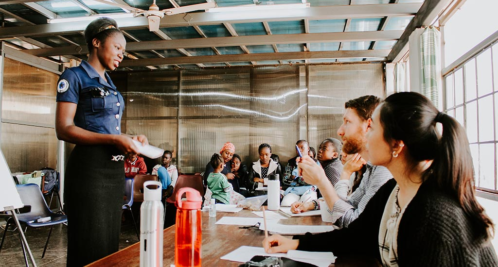

Moringa Access Program
The Access Program aims to bring Moringa’s
world-class education to ambitious youth

Access scholarship Program
ACCES provides partial scholarships to the brightest
Kenyan students from the most vulnerable backgrounds,
ensuring that they are able to complete their full
course offering studies.